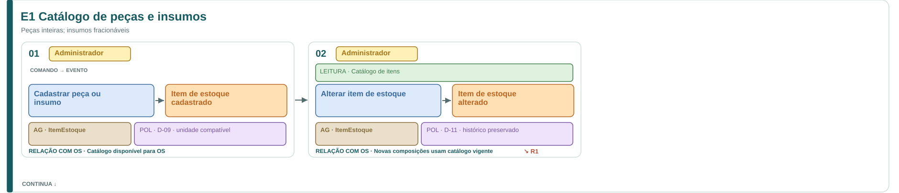
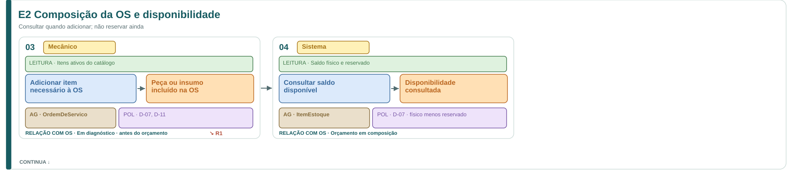
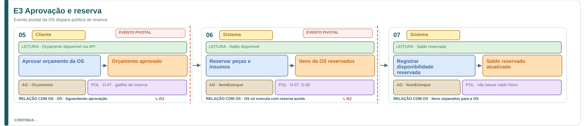
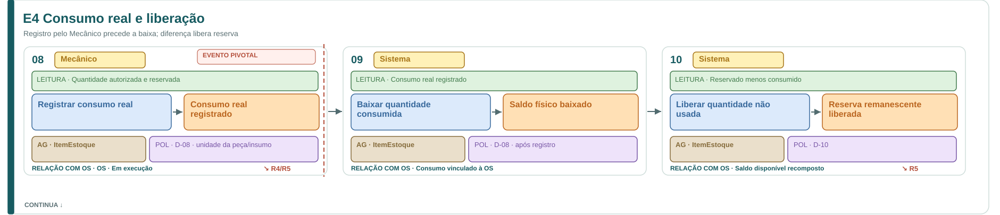
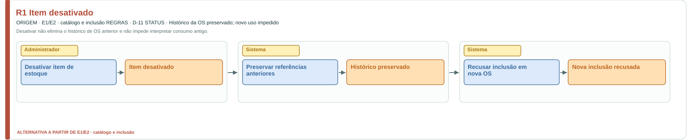
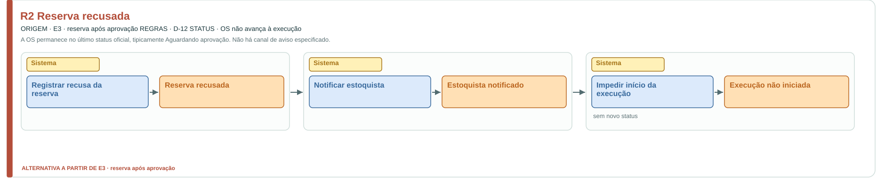
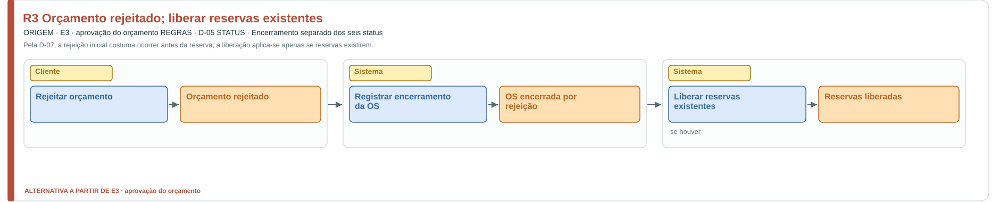
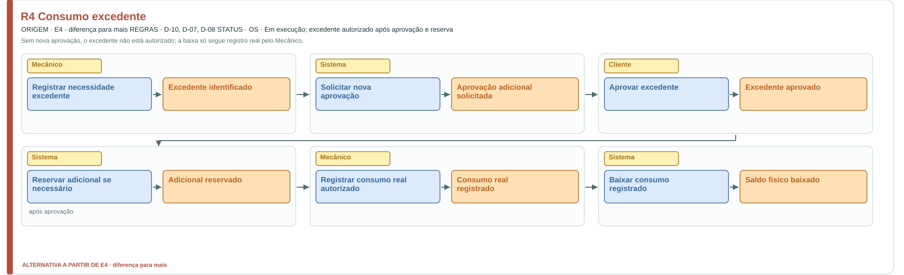
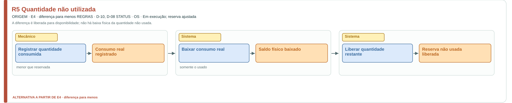
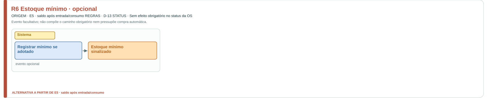

← Documentação DDDEvent Storming: peças e insumos
Cadastro, disponibilidade, reserva, consumo, liberação e reposição do estoque.
Use os diagramas abaixo para acompanhar o fluxo. Baixar arquivo Excalidraw editável
Fluxo principal

E1 Catálogo de peças e insumos · Ampliar diagrama
E2 Composição da OS e disponibilidade · Ampliar diagrama
E3 Aprovação e reserva · Ampliar diagrama
E4 Consumo real e liberação · Ampliar diagramaE5 Entrada e reposição · Ampliar diagramaVariações e exceções (6 diagramas)

R1 Item desativado · Ampliar diagrama
R2 Reserva recusada · Ampliar diagrama
R3 Orçamento rejeitado; liberar reservas existentes · Ampliar diagrama
R4 Consumo excedente · Ampliar diagrama
R5 Quantidade não utilizada · Ampliar diagrama
R6 Estoque mínimo · opcional · Ampliar diagrama